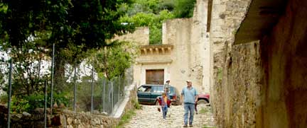

La Luz to La Maroma
La Luz to La Maroma, via Alamitos.
| Miles |
Km | |
| 0.0 | 0.0 | La Luz. Take the road to Alamitos.The sign says: “Alamitos de los Diaz 10” |
|
0.7 |
1.1 | Old road to right goes up to Santa Anita mines and on over the mountain to Real de Catorce. Probably no longer passable. |
|
1.1 |
1.8 | Top of grade. To the right is the upper trail to Santa Antia mine ruins. |
|
1.5 |
2.4 | Continue through El Verde, a little rancho. |
|
2.5 |
4.0 | Rancho on the left. Entering an area or high rolling meadows. |
| 3.9 | 6.3 | Trail to the right goes back to the Pueblo Phantasma area. |
| 4.6 | 7.4 | Pass a small rancho and cement tank on the right. |
| 5.1 | 8.2 | Trail to the right returns to Real de Catorce via the San Francisco mines. |
|
5.3 |
8.5 | Fork in the road, keep left for La Maroma. Right fork continues down to Alamitos in the next valley. ( Four wheel drive recommended from here to La Maroma.) |
 |
||
| 5.7 | 9.2 | View of Alamitos on the right. |
| 6.8 | 10.9 | (Low pass, south of Alamitos) |
| 8.0 | 12.9 | (another low pass) |
| 8.9 | 14.3 | Obvious shelter cave to right of road. |
| 9.4 | 15.1 | The little rancho of Alamarito in the mid-foreground and Cerro Quemado in the background are at 40 deg W of N. |
| 9.8 | 15.8 | Continue through this area of live oak forest. |
| 10.2 | 16.4 | Puerto de San
Jose. Eastern edge
of plateau. Begin descent
toward Jordan to the south. Track to right eventually leads to Wadley. (See Real de Catorce to
Alamitos via Wadley roadlog.) |
| 11.7 | 18.8 | Several ranchos with fields are below the road to the left. |
| 12.5 | 20.1 | The small church on the left is Becerra de Jordan. |
| 13.3 | 21.4 | Keep left. The road to the right goes somewhere else. There is another shelter cave visible under the curve in the road. |
| 14.6 | 23.5 | Keep left. Road to the right to La Alberca. |
| 14.8 | 23.8 | Cross a bridge. |
| 16.2 | 26.1 | Jordan. Church is on the right. |
| 16.7 | 26.9 | Cross an old aqueduct. |
| 17.2 | 27.7 | Cross a large blue pipe. This and the previous aqueduct are part of the water supply system for Matehuala. |
|
18.3 |
29.5 | Real de la Maroma. This was a colonial silver mining area. Some of the colonial archecture remains as well as some mine ruins. Turn left in the center of town to return via Matehuala. ( see the Matehuala to San Bartolo and La Maroma roadlog.) |
|  |